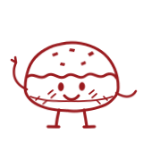
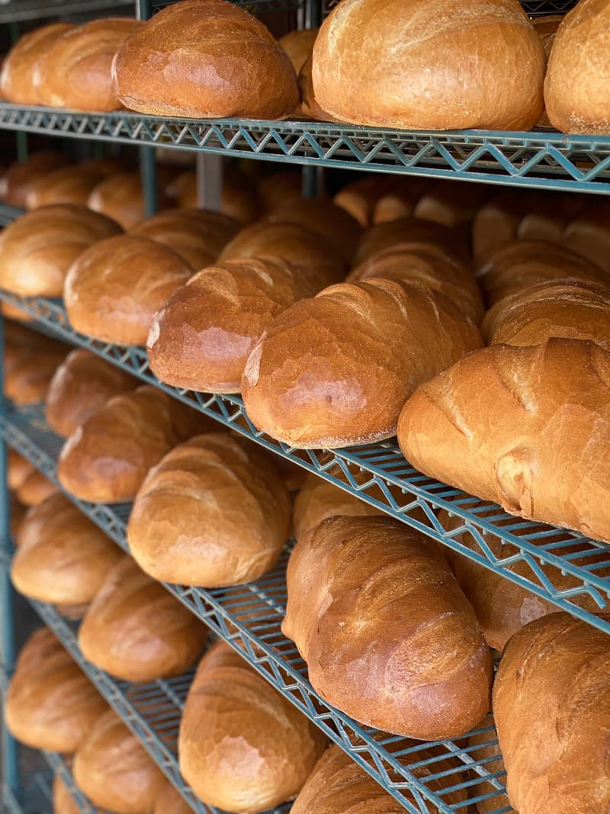

Tagline
One line per surface. The primary line leads everywhere. The alternates suit specific places.
Baked on North 8th since 1992.
Smacznego from North 8th.
Playful. For bags, boxes, stickers and social media. Smacznego means "enjoy your meal."
A little bit of Poland on North 8th.
Heritage. For the Our Story section, holiday campaigns and press.
Brand pillars
Who we are, in three ideas. Every photo, post and sign should support at least one of them.
Rodzina
Family-made since 1992
Started by Richard and Teresa Podedworny and still run by the family. Every recipe has a person behind it.
Tradycja
Polish at heart, Brooklyn by address
Pączki, pierogi and gołąbki are the soul of the shop, and the menu has grown to welcome the whole neighborhood.
Świeżość
Made fresh, every day
Pastries and hot food are made in the shop daily. What's on the counter changes with the day and the season.
Colors
Red and cream carry the brand. Everything else is a lighter or darker step of the two, plus a warm near-black for text. No other colors, no gradients.
Headlines, buttons, drawings, logo
Hover, pressed
Main background
Cards, panels
Body text
Balance: about 60% cream and paper, 30% red, 10% ink.
Typography
Fraunces for headlines, with its italic for the motto and dish names. EB Garamond for reading text, and in spaced small capitals for menus and buttons. Both free from Google Fonts. The script lives only in the logo.
Baked on North 8th since 1992.
Stuffed cabbage rolls
Gołąbki
Cabbage leaves wrapped around rice and meat, or buckwheat and mushroom. Hot from the counter every day, or by the pan for a family dinner.
Aa Bb Cc ą ć ę ł ń ó ś ź ż Ł Ż 0123456789 $1.65
Fraunces
Headlines and dish names. SemiBold 600.
Fraunces Italic
The motto and dish names. Polish names go underneath in small EB Garamond italic.
EB Garamond
Reading text at 20px; spaced small capitals for menus and buttons.
Logo
The wheat-and-script roundel is the only logo. Keep it exactly as drawn, in one of three versions.
- Clear space: at least the height of the "B" in BAKERY on every side.
- Minimum size: 120px wide on screen, 1 inch in print.
- Don't stretch, rotate, outline, add shadows or recolor it, and don't place it on busy photos.
- To do: find the original vector file (.ai, .eps, .svg or .pdf). The current file is screen-only.
Illustrations
Bakery objects drawn like old engravings, taken from the ink drawings on our paper bags. One color, hand-drawn line, hatch marks for shadow, flour-dust dots for texture.
Characters
The playful side: the food comes to life with dot eyes, a small smile and stick legs. One or two per surface, next to headings, in the footer, on stickers and boxes.

Pączek- Use as bands and borders, like the bottom of the bag, or scattered at the edges. Tilt ±10° at most.
- Red on Cream or Paper, or Cream on Red. Files:
images/doodles/(red) andimages/doodles/cream/. - Never on top of food photos, the logo or text. Minimum 32px on screen, 0.5 inch in print.
- Next to draw: makowiec, a jar of pickles, a kielbasa ring, a mazurek, the storefront.
Photography
Real photos of our food, shelves and shop. Close and generous, warm natural light, no stock photos. People only with their permission.



Tone of voice
Like a regular behind the counter: warm, plain-spoken, a little proud, never pushy.
- Say what it is. "Cabbage rolls stuffed with rice and meat", not "an elevated take on a classic".
- English first, Polish second. "Stuffed cabbage rolls", with gołąbki smaller underneath. Always with the correct Polish letters.
- Short sentences. Most things should fit on a chalkboard.
- Only say what's true. No invented awards, reviews or "best in town" claims.
- Calm and confident. One exclamation point per page, at most.
Do
- Pączki day. Order them by the dozen and skip the line.
- Pastries and hot food are made right here every day.
- Some things rotate, so ask at the counter.
- Gołąbki, stuffed cabbage rolls
Don't
- OMG!!! It's PĄCZKI DAY at Northside!!!
- Artisanal handcrafted culinary experiences.
- Product availability subject to change without notice.
- Golabki (missing Polish letters)
Formats: 7 am to 8 pm. $1.65 each. Small $4.25, large $7.95. (718) 782-5551.